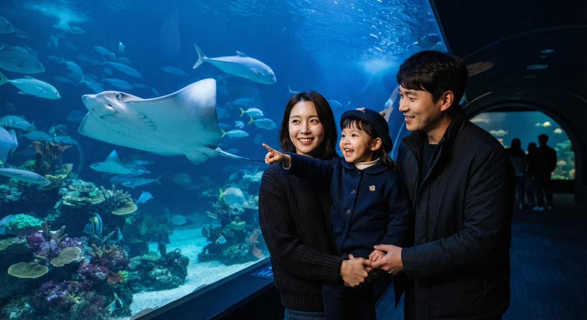
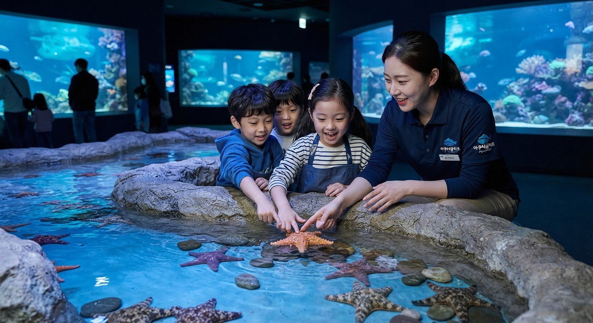

도심 속에서 마주하는
깊고 푸른 바다의 신비,
아쿠아폴리오
국내 최대 25m 메인 수조, 650종 55,000여 마리의 해양 생명들이 펼치는 환상적인 생태 하모니. 투명한 심해 아크릴 너머로 살아 숨 쉬는 생명의 경이로움을 오감으로 마주하세요.
오늘의 생태설명회 & 공연 타임테이블
전문 아쿠아리스트가 들려주는 경이로운 해양 생명들의 스토리텔링과 특별 피딩
아쿠아폴리오 5대 테마존 큐레이션
태양빛이 쏟아지는 담수 생태계부터 끝없는 심해의 적막까지, 층별로 진화하는 신비로운 여정
딥 오션 360° 파노라마 터널
머리 위로 유영하는 거대한 상어와 가오리의 압도적인 실루엣. 바닷속 한가운데를 직접 걷는 듯한 경이로운 전방위 뷰포인트
시그니처 해양 생물 도감
아쿠아폴리오 생태 연구팀의 전문적인 케어로 함께 살아가는 주요 보호종들입니다
벨루가 (흰고래)
Delphinapterus leucas‘바다의 카나리아’라 불릴 만큼 다양한 음역대의 멜론(이마의 지방층) 소통 체계를 지녔습니다. 등지느러미가 없어 유빙 밑을 자유롭게 유영합니다.
샌드타이거샤크
Carcharias taurus날카로운 이빨과 무서운 외모와 달리 온순한 바다의 신사입니다. 공기를 삼켜 위장에 저장함으로써 수중에서 중성 부력을 유지하는 독특한 능력이 있습니다.
푸른바다거북
Chelonia mydas해양 생태계의 대표 보호 지표종으로 수백 킬로미터를 회유합니다. 아쿠아폴리오 구조치료센터에서 재활 치료를 마친 뒤 방류 프로그램을 병행하고 있습니다.
대왕문어
Enteroctopus dofleini지구상에서 가장 큰 연체동물로 3개의 심장과 파란 피를 지녔습니다. 놀라운 문제 해결 능력과 도구 사용으로 해양 지능의 정점으로 평가받습니다.
점박이물범
Phoca largha대한민국 백령도 서식지의 소중한 토종 해양 포유류입니다. 유선형 체형과 유연한 지느러미발로 시속 30km 이상의 빠른 스피드로 회유합니다.
해양생물 디지털 아카이브
산호초 군락부터 심해 3,000m의 극한 생명체까지. 아쿠아폴리오 연구진이 직접 기록한 고해상도 생체 데이터와 음향 데이터를 검색하세요.
추천 관람 코스 & 동선 가이드
방문 목적과 동행자에 맞춰 설계된 최적의 관람 순서와 필수 포토존 안내
온 가족이 함께 즐기는 편안한 탐험
유모차 이동이 수월한 무장애(Barrier-Free) 완경사 슬로프 중심의 동선입니다. 아이들의 눈높이에 맞춘 인터랙티브 터치풀과 벨루가 생태 설명회를 최단 거리로 연결합니다.

필수 포토스팟 #1 메인수조 앞
체험 스팟 #2 오션 터치풀특별 프로모션 & 이달의 예매 혜택
온라인 사전 예매로 대기 없이 바로 입장하고 최대 40% 제휴 할인 혜택을 누리세요
통신 3사 및 주요 제휴카드 특별 할인
SKT, KT, LGU+ 멤버십 회원 상시 30% 현장 및 온라인 할인. 현대·신한·KB국민카드 포인트 100% 사용 및 결제일 10% 추가 청구할인.
얼리버드 3인/4인 가족 패키지
성인 2인 + 어린이 1~2인 통합 입장권과 아쿠아 카페 음료권 2매, 주니어 탐험 스탬프북 세트가 모두 포함된 한정 패키지 상품입니다.
아쿠아폴리오 연간 패스 (Aqua Pass)
계절마다 변화하는 심해 생태계를 1년 내내 자유롭게. 기획 특별전 우선 초대권과 기프트숍 & 카페 상시 15% VIP 할인 제공.
생명을 살리고 바다를 지키는 약속,
AQUAFOLIO Blue Sanctuary Initiative
아쿠아폴리오는 단순한 전시 공간을 넘어 다치거나 조난당한 해양 생물들을 구조·치료하고 자연으로 돌려보내는 공공 생태 연구소입니다. 입장 수익의 일부는 동해·남해안 연안 서식지 복원 및 미세 플라스틱 정화 연구 기금으로 직접 환원됩니다.